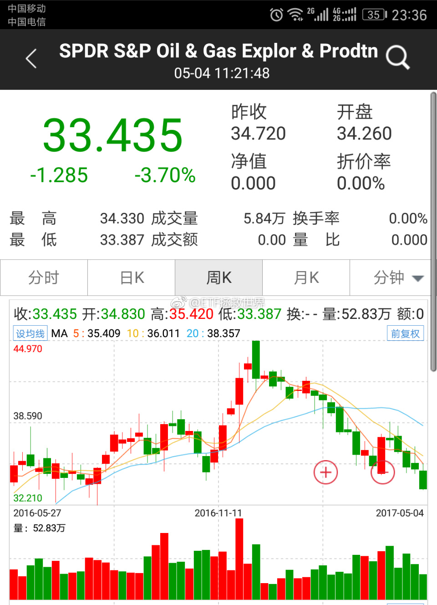

回复@石头里的虫子:这个没事。我能把外星人忽悠的买20份中证500ETF。66的//@石头里的虫子:特大坏消息有可能是外星人进攻地球，人类文明要消失。@ETF拯救世界:还有一个要注意的，是，我现在虽然不知道是什么，但如果真的出现特大机会，那一定是有了什么现在意想不到的坏消息。这个坏消息特别坏，坏到让大多数人完全丧失了信心。所以不要用现在的思维去衡量那时候，那个坏消息出来的时候，已经完全跟现在不同了。当然了，那个所谓的特大机会也许不会出现，因为没有所谓的坏消息出来。我只是提醒，无论发生什么，都不用过于害怕，要做好心理准备。除非，真的是有什么不可逆转的惊天巨变发生了。不过呢，真到了那个时候，你持有什么都无所谓了是吧……
还有一个要注意的，是，我现在虽然不知道是什么，但如果真的出现特大机会，那一定是有了什么现在意想不到的坏消息。这个坏消息特别坏，坏到让大多数人完全丧失了信心。所以不要用现在的思维去衡量那时候，那个坏消息出来的时候，已经完全跟现在不同了。当然了，那个所谓的特大机会也许不会出现，因为没有所谓的坏消息出来。我只是提醒，无论发生什么，都不用过于害怕，要做好心理准备。除非，真的是有什么不可逆转的惊天巨变发生了。不过呢，真到了那个时候，你持有什么都无所谓了是吧……
没有下跌就没有超额利润。没有大跌就赚不到大钱。没有暴跌就没有巨额财富。证券市场的波动非常正常，我们要做的就是所有人悲观恐慌的时候伸出兰花指拿起鼠标点一下买入。当然，到时候恐慌的人群众很可能也有你。两年了，等待不会白费。@ETF拯救世界:继续打预防针：随着仓位逐渐加大，未来如果出现各种预料之中，预料之外的下跌，市值会减少。只要记住两件事。你手里的东西，是指数。公司可能由好变坏，由坏退市，指数不会。中国最好的几百家公司都在你的手中，无论怎么跌，不用怕。第二是，我们的投资方式，会把成本控制在非常低的水平。一定不会是最低，但大概率是在一个极低的区域。所以大概率会赚钱，而且应该会赚不少。无论怎么跌，记住这点。不会死，大概率赚。记住这两条，无论多冷的冬天你都能熬过来。当然，大多数人熬不过去。
回复@hcy天云:我这儿的朋友都病得不轻。//@hcy天云:已经跌破3100了，为什么看到跌我就默默的高兴，难道我有病？@ETF拯救世界:3100保不保？能不能让我开开心心的出发？北京沙尘暴何时消失？娜扎和热巴谁更美？请看今日的《法治进行时》
你知道我最讨厌什么人吗。我最讨厌的是，根本不知道，似乎也不想知道，当然，也完全没机会知道我们到底在做什么，就叉着腰上来指指点点。资本市场中，没人会是完美的，也没有策略会是完美的。所以通过不同声音引起反思，取得进步是我特别高兴的事情。但我希望的是，在批判别人之前，先弄清楚别人到底在干嘛。您说是吧。
回复@塞外大诗人:第一呢，上证的6000是中石油的6000。之所以回不去就是我说的买的太贵。同理可见80年代末的日本和90年代初的台湾。还有2000年开始跌跌倒2015才回去的纳斯达克。第二呢，你完全不知道我们在做什么。我们做的事情和网格一毛毛毛钱关系都没有。无限放大更是不知从何说起。散了吧。see you@ETF拯救世界:继续打预防针：随着仓位逐渐加大，未来如果出现各种预料之中，预料之外的下跌，市值会减少。只要记住两件事。你手里的东西，是指数。公司可能由好变坏，由坏退市，指数不会。中国最好的几百家公司都在你的手中，无论怎么跌，不用怕。第二是，我们的投资方式，会把成本控制在非常低的水平。一定不会是最低，但大概率是在一个极低的区域。所以大概率会赚钱，而且应该会赚不少。无论怎么跌，记住这点。不会死，大概率赚。记住这两条，无论多冷的冬天你都能熬过来。当然，大多数人熬不过去。
无论是阴跌，暴跌，只要记住手里的东西是指数，只要我们买的不高，一定会涨回去挣钱，就踏踏实实的。买的低点高点，无非是多赚点少赚点的区别。股票就不同了。有些股票可能这辈子都涨不回高点了。不是鬼故事。@ETF拯救世界:继续打预防针：随着仓位逐渐加大，未来如果出现各种预料之中，预料之外的下跌，市值会减少。只要记住两件事。你手里的东西，是指数。公司可能由好变坏，由坏退市，指数不会。中国最好的几百家公司都在你的手中，无论怎么跌，不用怕。第二是，我们的投资方式，会把成本控制在非常低的水平。一定不会是最低，但大概率是在一个极低的区域。所以大概率会赚钱，而且应该会赚不少。无论怎么跌，记住这点。不会死，大概率赚。记住这两条，无论多冷的冬天你都能熬过来。当然，大多数人熬不过去。
计划的这0.6%油气，应该能让很多朋友更加了解自己。在面对暴跌的时候，是高兴还是害怕。答案很可能与你自己当初的想象不同。这非常好，用这么点仓位就弄清楚，总比以后仓位大了再害怕强。这次应该会洗掉不少叶公了。@ETF拯救世界:难道要重演去年的一幕，再赚一轮？ 